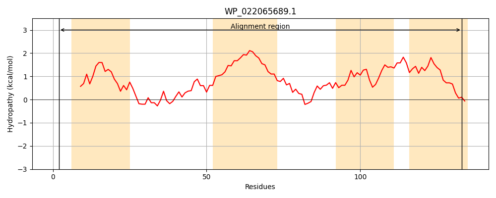
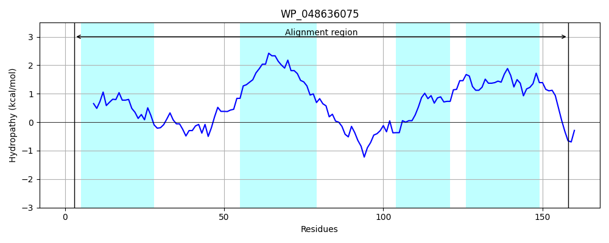
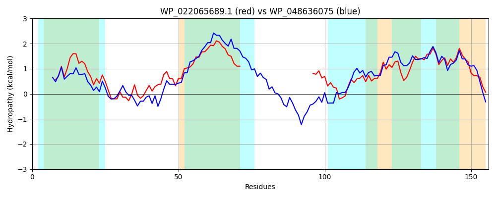

Hit Accession: WP_048636075
Hit TCID: 9.B.284.1.2
Hit Description: gnl|BL_ORD_ID|21147 gnl|TC-DB|WP_048636075.1|9.B.284.1.2 hypothetical protein [Brenneria goodwinii]
Mach Len: 156
e:0.000000
Query TMS Count : 4
Hit TMS Count: 4
TMS-Overlap Score: 3.250000
Predicted Substrates:None
BLAST Alignment:
Score: 249 , Bit scores: 100 bits, E-value: 9.9e-28, Alignment length: 156, Percentage identity: 35
Query: 2 KIQRKSLFLFWAWMDLFFVLQFLWWNIAHRRLPFYDDLLAYLQLLHTYGSGAVWLYPLNVLLIISIPLSMIL------------------------FFRQSRYALWLAWGQAPLRLVFMQPSLSLGLWLIQAAGIRHVAILAGFLLLSEGLKIASL 133
+I S+F FW MDLF+V ++LW + +H R+P YD++L + QL +G L+ L++ L++SIP+S +L F RQ R+A+ LA+ Q P+RL+ PSLS WL+ G H + G LL SE K+ +L
Sbjct: 3 RINATSVFYFWGMMDLFYVARYLWLSFSHNRIPIYDEILTFWQLRPFHGDYVDILFALSLGLLLSIPVSAVLFLWTAIHGATFQPSPAPFNISPENFLRQRRFAVTLAYLQTPIRLLTAAPSLSFIPWLVGVIGFHHALLNLGLLLFSEIAKVLTL 158 | Protein Hydropathy Plots: |
|---|
|  |  |
Pairwise Alignment-Hydropathy Plot:
|
|---|
|  |